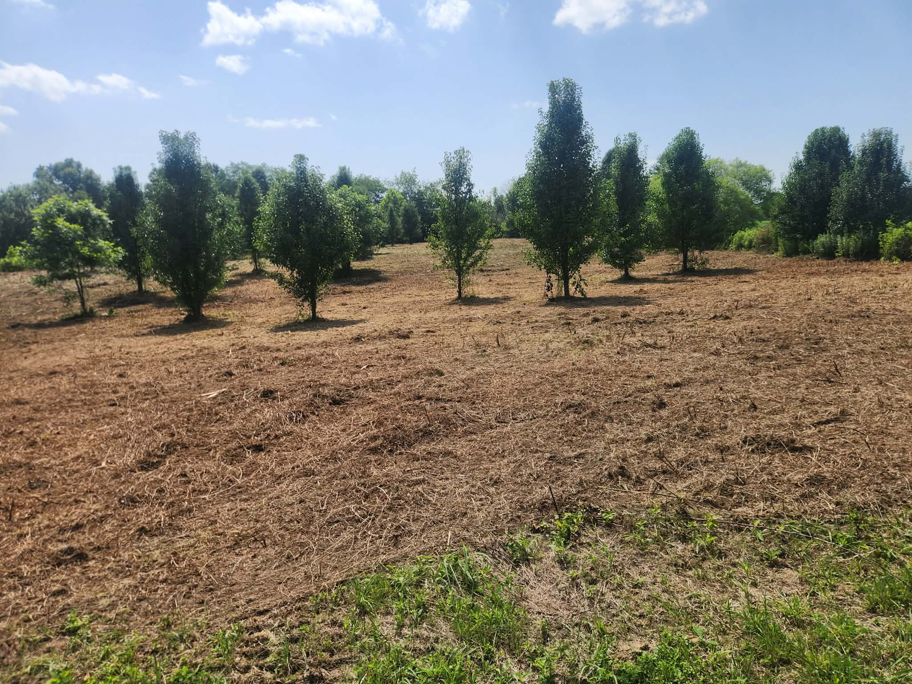
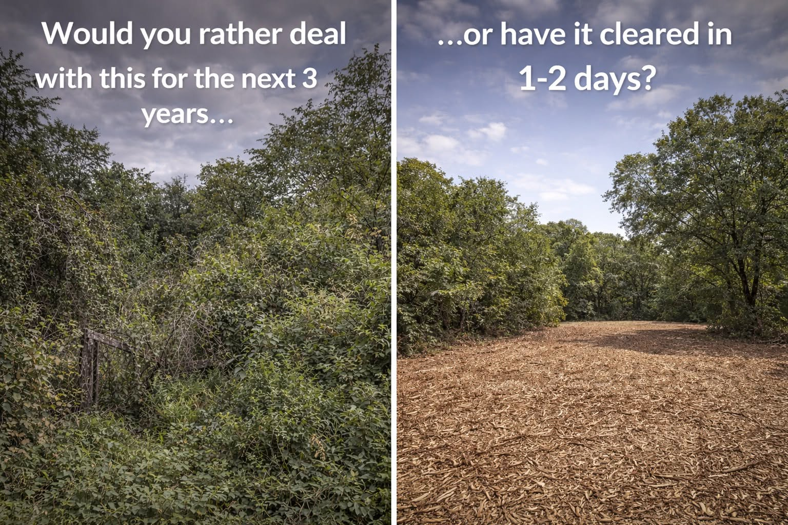
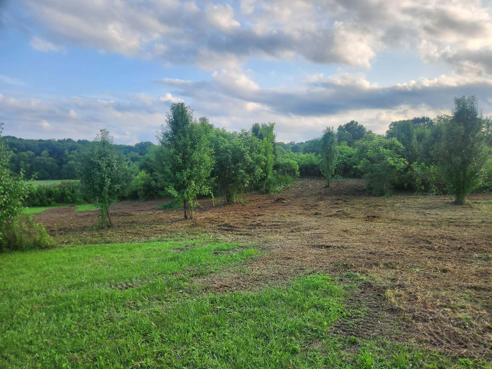

Reclaim Overgrown Property
Brush, briars, and volunteer saplings ground into clean mulch — forestry mulching turns lost acreage back into land you can use.
Learn MoreForestry Mulching · Southern Ohio & Eastern Kentucky
Owner-operated forestry mulching across Southern Ohio & Eastern Kentucky — done in days, not weeks.
Meet the Owner
No call center. No crew of subcontractors. No salesman who has never run a mulching head. You talk to the owner — and the owner is the one who shows up.

When the storm clears, we're just getting started.
BlueGrid Land Solutions is owner-operated, which means the person who prices your property is the same person who clears it — and the same person who picks up the phone afterward.
What You Get Back
You don't need a machine — you need your land back. One machine and one owner handle the rest: no burn piles, no dumpsters, no convoy of subs.
Brush, briars, and volunteer saplings ground into clean mulch — forestry mulching turns lost acreage back into land you can use.
Learn More
House sites, barn pads, and pastures opened up with land clearing that leaves a clean, workable finish — fast.
Learn More
Buried fence lines and field edges brought back with targeted brush removal — walk your own boundary again.
Learn More
Clean, driveable trails cut exactly where you want them — ride from the barn to the back forty without leaving the seat.
Learn More
Downed trees, snapped tops, and blocked lanes handled fast with storm cleanup. The storm took its shot — now take back your land.
Learn More
Neglected acreage and choked pond edges opened back up — property cleanup that restores views you forgot you had.
Learn More
Shooting lanes, food plot sites, and quiet access routes — hunting property prep that makes your ground hunt bigger.
Learn MoreTransformation Stories
Same hillside. Same access corridor. Drag the divider and see what one machine and a couple of days can do.
 Before
Before

After

The goal: reopen a buried fence line and utility corridor.
Ten-foot briars, zero access, a boundary the owner hadn't walked in years. One day of mulching turned it back into a corridor you can drive a truck down.

The goal: stop fighting the same thicket every summer.
Would you rather deal with it for the next three years — or have it cleared in one to two days? This woodlot went from choked to mowable, and the mulch layer keeps the regrowth down.

The goal: a finish clean enough to walk that same evening.
Dusk in Greenup County, KY — machine still warm, ground already walkable. No burn piles smoldering for a week, no ruts, nothing left to haul away.
One Machine. One Owner.
Our New Holland C337 compact track loader runs a Fecon mulching head — one machine that clears, grinds, and finishes. No burn piles, no hauling, and the mulch goes back into your soil.
Most projects wrap in one to two days. You get an estimate within 24 hours, a straight answer on scheduling, and a crew that shows up when it says it will.
Owner operated, start to finish. No sales layer, no phone tree — the person quoting your job is the one running the mulcher on it.
We leave ground you can mow, plant, hunt, or build on — not a mudlot full of root balls and ruts.
From Photos to Finished
Send the form with a few photos of the property. Two minutes, tops.
We size up the job from your photos and quote it — usually within 24 hours.
Complicated terrain or access? We'll walk it with you first.
Pick a window that works. We confirm, we show up, we start.
Walk the finished ground with us. Most jobs: one to two days.
The Ohio River Corridor
Explore the live map of our Southern Ohio and Eastern Kentucky service area. On the fence about distance? Ask anyway — we roam.
Follow the Work
Every job gets posted — befores, afters, and the occasional muddy day. Follow along on Facebook.

The work, as it happens
Befores, afters, and the occasional muddy day — posted from the cab, not a marketing office.
View Us on Facebook
Utility corridor in Greenup County reopened — a quarter mile of brush and saplings down to clean ground in one day.
This is what we start with. Ten-foot briars, buried fence line, zero access. Check back Friday for the after.
The C337 earning its keep in a Scioto County woodlot. Fecon head turns brush into mulch and puts it right back on the soil.
Word of Mouth
BlueGrid Land Solutions is focused on delivering quality work and earning every review the right way. As customers begin sharing their experiences, you'll see them here.
Until then, check out our recent projects on Facebook to see the quality of our work.
Straight Answers
Forestry mulching is a single-machine land clearing method. A tracked machine with a heavy-duty mulching head grinds brush, saplings, and trees into mulch right where they stand. There is no burning, no hauling, and no piles left behind — the mulch stays on the ground, protects the soil, and breaks down naturally.
Traditional clearing uses dozers and excavators to rip vegetation out by the roots, which disturbs topsoil and leaves piles to burn or haul. Forestry mulching grinds vegetation in place with one machine. It is faster, cleaner, easier on your ground, and on most properties it costs less.
Most forestry mulching in our area is priced by the acre or by the day, and the number depends on how thick the growth is, the terrain, and access. Send us a few photos of your property and we will give you a straight answer — most estimates are handled remotely within 24 hours, free of charge.
For typical brush and saplings, we clear one to three acres a day. Heavier growth with larger trees takes more time per acre. Most residential and hunting-property projects are finished in one to two days.
Our Fecon mulching head works efficiently on trees up to about 8 to 10 inches in diameter. Larger scattered trees can often be dropped and processed on site. If your property is mostly big timber, we will tell you honestly whether mulching is the right tool for the job.
Most brush clearing and forestry mulching on private property requires no permit in Ohio or Kentucky. Exceptions can apply near streams, wetlands, or inside some city limits. We will flag anything that needs a closer look during your estimate.
The mulch stays on your property as a natural ground cover. It suppresses regrowth, holds moisture, prevents erosion, and slowly feeds the soil as it breaks down. Nothing gets burned and nothing gets hauled to a dump.
Yes — access trails, shooting lanes, food plot sites, and fence line clearing are some of our most requested jobs. We can cut clean, driveable trails through timber and open up lanes exactly where you want them.
Storm cleanup jumps the line. In most cases we can review photos the same day and have a machine on site within days, not weeks. Downed trees and blocked access do not wait, and neither do we.
We work across Southern Ohio and Eastern Kentucky — Scioto, Pike, Jackson, Ross, Adams, Gallia, and Lawrence counties in Ohio, plus Boyd, Greenup, Carter, and Lawrence counties in Kentucky. Not sure if we cover you? Ask — we regularly take on projects a county or two beyond the map.
This is the machine that does it — one owner in the seat, and most estimates answered within 24 hours.
Step 1 of 5
We'll reach out within 24 hours — usually a lot sooner. While you wait, see what your property could look like.